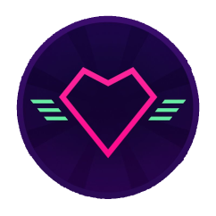

__
__ __ ___ /\_\ ___ __
/\ \/\ \ / __`\/\ \ /'___\ /'__`\
\ \ \_/ |/\ \L\ \ \ \/\ \__//\ __/
\ \___/ \ \____/\ \_\ \____\ \____\
\/__/ \/___/ \/_/\/____/\/____/Here are some facts… fast facts!
- I schedule for videos on Mondays, Tuesday and Fridays!
- Mondays video have always been .XPenguin.
- .XPenguin is now over.
- I really like Salted Peanuts. (Specifically KP, I like how the logo is a silhouette of a nut)
- Sayonara Wild Hears was a GREAT game! - it made me cry! twice!

Not that this post is about Sayonara Wild Hearts. But on a side note I found this excellent breakdown of the game and its story.
Look at me, distracting myself on the first paragraph. Legendary power move that was! (I assure you I chuckled while writing that.)
No video on Mondays then?
No. Maybe, I don’t know. I think I’m going to use Mondays as a “if I have something to say” day. But if I have nothing, I won’t worry about it. I mean, without doing the podcast, I could see myself having a lot to say on Mondays. Over all I think the post XP world will have as much, or more content than it did before. - so, yeah, don’t worry!
Why does it say VOICE at the top is isometric ASCII?
So that you will ask that question, reminding me to tell you about the “HexDSL’s unnamed Voice log project!” Its called that because I have not settled on a name yet.
The project is a sort of Voice log. A VLOG but the V stands for Voice not Video. When I have a thought or an idea, I simply pull out my high quality portable audio device and ramble to myself (its my phone)
I take the clips when there are enough of them and put them into one audio file between each little clip, we have a BEEP for separation.
Then I upload it here for sharing. People can listen or not listen. Mostly it will be for me to listen to when I’m old(er) and grey (balder) but you may like it. Most times ill write an accompanying post to read along with it.
If you have name suggestions then please do message me. I like Mastodon, IRC or Discord. I am also not afraid of e-mail.
Whats all this Sayonara Wild Hearts rambling about?
Its this great game I played last night, and again this morning. Here’s the Steam Page. It’s this game that’s about an hour and some change long. Its neon and purple/pink and has an amazing soundtrack. I can’t really describe it but its about fixing a broken heart and kissing bad guys on the cheek until you feel better. Yeah… Really. I loved it. All of it. It was a wonderful example of how games can be art and tell stories in ways that only games can. Also, it makes no fucking sense while totally making sense. Just play it! It’s on the Switch too! (I played in on Switch but it has PLATINUM rating on ProtonDB)
Peanuts?
YES
Hex out. Drops Mic!